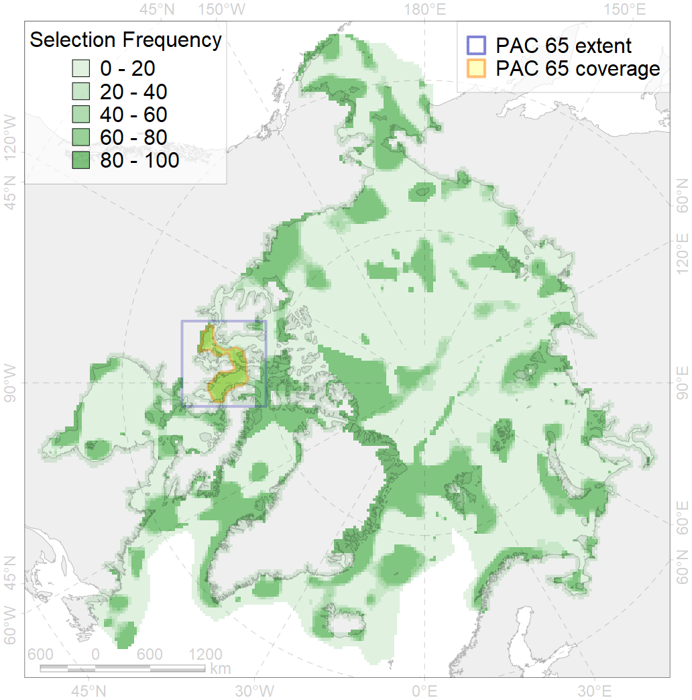
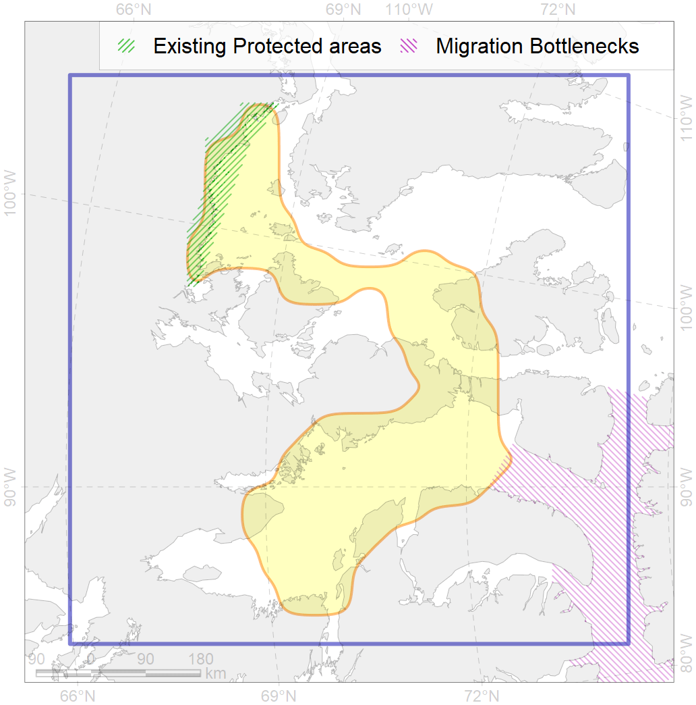

65
For more information regarding this PAC and to conduct custom spatial analysis using the PAC data or any spatial query, please consult Accenter.

0
CFs entirely within the PAC area
9
CFs at least 25% within the PAC area
11
CFs with at least 50% of their target achieved in the PAC
25
CFs with at least half of their target achieved in the PAC
| CF ID | CF Name | Proportion in the PAC | Conservation Target | Contribution to ArcNet Target Achievement | PAC’s Contribution to the Achieved Target |
|---|---|---|---|---|---|
| 9008 | polar bear of the GB (Gulf of Boothia) subpopulation distribution | 83.7% | 32.4% | 245.8% | 96.3% |
| 5094 | Narwhal Somerset Island stock summer core distribution | 73.0% | 72.0% | 100.5% | 96.8% |
| 9026 | polar bear denning areas of GB (Gulf of Boothia) subpopulation | 72.2% | 64.8% | 97.7% | 97.1% |
| 9031 | polar bear denning areas of MC (M’Clintock Channel) subpopulation | 67.4% | 64.8% | 89.6% | 88.7% |
| 5004 | Beluga of the Baffin Bay summer distribution | 56.5% | 48.0% | 98.8% | 62.1% |
| 9013 | polar bear of the MC (M’Clintock Channel) subpopulation distribution | 39.2% | 32.4% | 93.7% | 71.1% |
| 8036 | Salt marshes of the Baffin Bay LME | 31.4% | 30.0% | 93.9% | 61.3% |
| 5093 | Narwhal Somerset Island stock summer distribution | 29.1% | 48.0% | 51.7% | 51.7% |
| 6007 | Brent goose (Branta bernicla hrota) Atlantic breeding&moulting grounds | 26.8% | 18.0% | 132.0% | 49.7% |
| 7136 | III.1.1.3. Archipelago inner shelf of low and medium profile | 24.1% | 6.8% | 307.7% | 53.1% |
| 5065 | Killer whale summer feeding areas in the North West Atlantic | 23.6% | 6.0% | 363.5% | 37.1% |
| 2004 | Bearded seal whelping areas in the south of the Canadian Archipelago | 22.1% | 24.0% | 70.4% | 62.7% |
| 3052 | Multiyear Ice distribution in September in the Baffin Bay LME | 19.5% | 18.0% | 98.8% | 23.7% |
| 2007 | Bearded seal whelping areas in the Baffin Bay | 16.6% | 24.0% | 64.3% | 22.4% |
| 7036 | Amundsen Gulf - Cambridge Bay transiztional zone | 15.7% | 18.6% | 69.6% | 30.4% |
| 5039 | Bowhead whale autumn concentrations in the Baffin Bay | 15.6% | 48.0% | 31.6% | 31.4% |
| 5005 | Beluga of the Baffin Bay summer core distribution | 14.9% | 72.0% | 19.5% | 18.2% |
| 7021 | Eastern Canadian Archipelago region | 13.6% | 9.7% | 126.2% | 21.0% |
| 7133 | III.1. Canadian Arctic Archipelago shelf and margin | 12.1% | 4.2% | 251.4% | 21.9% |
| 5041 | Bowhead whale summer concentrations in the Baffin Bay | 11.7% | 48.0% | 22.2% | 21.4% |
| 7137 | III.1.1.4. Canadian Archipelago glacial troughs | 11.7% | 4.5% | 220.4% | 34.1% |
| 3006 | Fast Ice distribution in the Canadian Archipelago region | 10.5% | 6.0% | 142.9% | 33.9% |
| 8030 | Salt marshes of the Beaufort Sea LME | 8.1% | 30.0% | 26.8% | 16.4% |
| 4009 | Feeding / nursery area of the Arctic Cisco (Coregonus autumnalis), American populations | 8.0% | 38.4% | 17.4% | 12.8% |
| 2044 | Ringed seal whelping areas in the Baffin Bay region | 7.1% | 24.0% | 26.9% | 13.1% |
| 3034 | Marginal Ice Zone distribution in July in the Baffin Bay LME | 6.7% | 24.0% | 24.2% | 10.0% |
| 4062 | Range of the White Sea eelpout (Lycodes marisalbi), American population | 6.5% | 6.0% | 80.0% | 11.1% |
| 4074 | Fish zoogeography, Arctic Region, High-Arctic Shelf Province, Canadian-Greenland District | 6.5% | 7.4% | 75.3% | 11.1% |
| 9011 | polar bear of the LS (Lancaster Sound) subpopulation distribution | 6.4% | 32.4% | 16.0% | 7.2% |
| 7134 | III.1.1. 1. Canadian Arctic Archipelago shelf | 5.8% | 7.4% | 73.3% | 12.2% |
| 9029 | polar bear denning areas of LS (Lancaster Sound) subpopulation | 5.6% | 64.8% | 6.8% | 6.8% |
| 3032 | Marginal Ice Zone distribution in July in the Beaufort Sea LME | 5.2% | 24.0% | 17.0% | 16.0% |
| 4011 | Feeding area of the Lake whitefish (Coregonus clupeaformis) | 4.9% | 38.4% | 10.3% | 9.8% |
| 4029 | Feeding area of the Arctic charr (Salvelinus alpinus), anadromous populations | 4.7% | 38.4% | 10.5% | 9.1% |
| 2061 | Ringed seal circumpolar foraging areas as predicted by MIZ distribution | 4.7% | 24.0% | 17.2% | 9.0% |
| 4053 | Range of the Fourhorn Sculpin (Myoxocephalus quadricornis), Euro-Asian populations | 4.5% | 3.0% | 129.0% | 7.7% |
| 2021 | Harp seal foraging areas in the Baffin Bay region | 4.2% | 24.0% | 15.8% | 7.4% |
| 4055 | Range of the Shorthorn Sculpin (Myoxocephalus scorpius), American populations | 3.7% | 3.0% | 110.4% | 6.3% |
| 7146 | III.2.2.1. Archipelago slope in Baffin Bay and Lancaster Sound | 3.7% | 5.5% | 54.4% | 7.1% |
| 4007 | Feeding/nursery area of the Cisco (Coregonus artedi) | 3.6% | 32.4% | 9.7% | 6.8% |
| 4019 | Feeding area of the Vendace, Least cisco (Coregonus sardinellа), American populations | 3.1% | 24.0% | 11.8% | 5.9% |
| 4048 | Feeding/nursery area of the ogac (Gadus ogac ) | 3.0% | 12.0% | 21.4% | 5.3% |
| 7024 | Western Canadian archipelago region | 2.8% | 13.0% | 13.7% | 11.5% |